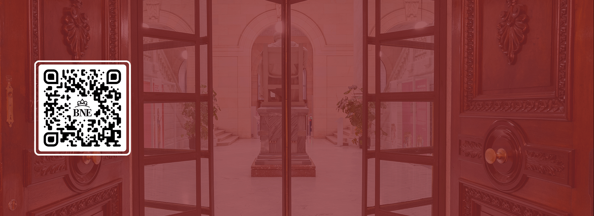

Nuevos usuarios
Horarios, carnés, normas de uso, formación, preguntas frecuentes...

Consulta de obras
Consulta de fondos de libre acceso y en los depósitos. Prestamos interbibliotecarios, salas de consulta,...

Salas de consulta
Consulta los horarios y condiciones de cada sala.

Reproducción de documentos
La Biblioteca ofrece un servicio de reproducción de fondos con el objetivo de facilitar el acceso a la información.
Visitas
Acercate a ver las exposiciones y conocer el edificio
Visita las exposiciones
Visita las exposiciones